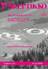
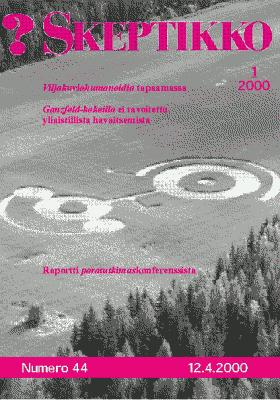
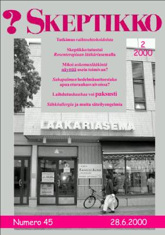
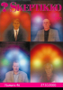
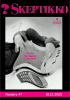
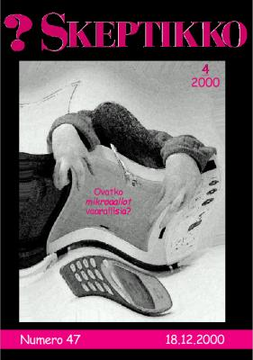

Skeptikko-lehti 2000
Ellei sinulla jo ole tietokoneellasi pdf-muodossa olevan tiedoston lukemiseen tarvittavaa
Acrobat Reader -ohjelmaa, saat sen ladattua maksutta tästä kuvakkeesta:

Skeptikko on Skepsis ry:n neljä kertaa vuodessa ilmestyvä jäsenlehti. Tästä verkkoversiosta löydät lehtien sisällysluettelon, yksittäisiä artikkeleita html-muodossa sekä kokonaiset lehdet pdf-muodossa.
  Skeptikko 44, 1/2000
- Sami Tetri: Pääkirjoitus. Skepsiksen 2000-luvun haasteet
- Jukka Häkkinen: Ganzfeld-kokeilla ei tavoitettu yliaistillista havaitsemista
- Jukka Häkkinen: Tietoisuus ja kvanttifysiikka
- Risto K. Järvinen: Humanoidia tapaamassa
- Bara Normal: Goes business – naturally
- Lena Huldén: Historiallisuus ei ole hyväksyttävä argumentti lääkeyrttien käytön puolesta
- Kalervo Kangas: Nullitus in verba. Älä usko kenenkään sanoihin!
- Matti Virtanen: Luontaistuotekaupan villi länsi
- Jukka Häkkinen: Puheenjohtajan palsta. Skepsis uudelle vuosituhannelle
- Risto K. Järvinen: Päätoimittaja pähkinänkuoressa
- Miljoonan dollarin hullutus. James Randin havaintoja kummallisesta maailmasta
- Pertti Laine: Tuloksia homeopatiasta?
- Timo Teinikivi: Keskustelua. Terapiakulteista terveelliseen uskoon
 Skeptikko 45, 2/2000
- Nils Mustelin: Pääkirjoitus. Suaviter in modo
- Risto K. Järvinen: Vaihtoehtohoidot psykologin silmin
- Risto K. Järvinen: Skeptikko Rosen-terapiassa
- B.L. Beyerstein: Miksi uskomuslääkintä näyttää usein toimivan? (käännös Veikko Näntö)
- Anna-Liisa Enkovaara: Sahapalmun hedelmäuutteestako apua eturauhasvaivoissa?
- Anna-Liisa Enkovaara: Etelä-amerikkalaiset ihmerohdokset pyrkimässä Suomen markkinoille
- Pertti Mustajoki: Laihdutushuuhaa voi paksusti
- Veikko Näntö: ”Sähköallergia” ja muita säteilyongelmia
- Risto K. Järvinen: Toimitukselta. Kikkelivarkaissa
- Risto K. Järvinen: Aidsin parantaja lyö rahoiksi Intiassa
- Pertti Laine: Kolmakowin hypoteesit ja Korotkovin instrumentit
- Sergei Kolmakow vastaa: Puutteellisesti tunnettuja ilmiöitä on uskallettava tutkia
- Risto K. Järvinen: Ihmeitä joka lähtöön
- Göran Törnwall: Skeptikot puhuvat palturia vuoden 1998 viljaympyröistä?
- Matti Pitkänen: Haaste Skeptikoille!
  Skeptikko 46, 3/2000
Skeptikko 46, 3/2000
- Sami Tetri: Pääkirjoitus. Älä ryhdy skeptikoksi!
- Totuus on tuolla jossakin ja Ray Hyman haluaa löytää sen, käänt. Jukka Häkkinen ja Suvi Salonvaara
- Bara Normal: Kansanviisautta katsomassa
- Mieli, moraali ja evoluutio, Steven Pinkerin haastattelu, käänt. Matti Virtanen
- Harri Hemilä: Vaihtoehtohoidot: hyötyä vai haittaa?
- Risto K. Järvinen: Laihdutusvyö laihdutti vain lompakkoa
- Risto K. Järvinen: Uusi lupaava laihdutusvalmiste?
- Vesa Tenhunen: Skeptisyydestä ja argumentoinnin virheistä
- Jukka Häkkinen: Puheenjohtajan palsta. Kannattaako skeptinen aktivismi?
- Risto K. Järvinen: Mitä ihmettä?
- Risto K. Järvinen: Skepsis mukana kaksilla messuilla
- Pertti Laine: Keskustelua. Segei Kolmakowille
- Heikki Tikkala, Raimo Tuomainen, Markku Myllykangas: Keskustelua. Tieteen aikakausi ja yliluonnollinen kognitiivisen dissonanssiteorian valossa
  Skeptikko 47, 4/2000
- Risto K. Järvinen: Pääkirjoitus. Tiesittehän…
- Jouko Koppinen: Milloin vuosituhat vaihtuu?
- Matti Virtanen: Paljon melua sähköstä
- Risto K. Järvinen: Mikroruoasta ei haittaa terveydelle
- Vesa Kolhinen: Miksi ihmiset uskovat outoihin asioihin?
- Jukka Häkkinen: Skepsiksen Huuhaa-palkinto televisio-ohjelmalle ”Akuutti”
- Pertti Kolari: Antioksidanttiparadoksi
- Veikko Näntö: Luontaistuotekaupan huolet – entä turvallisuus?
- Hannu Lauerma: Auttaako hypnoosi?
- Bara Normal: Huippulahjakkuuksien mukana
- Tauno Puolitaival: Keskustelua. Eriävä näkemys kognitiivisesta dissonanssista
- Reijo Siipola: Keskustelua. Tyhmiä kysymyksiä evoluutiosta
- Jukka Pöyry: Tarinoita erilaisista huijauksista
- Marko Ahonen: Miksi scifin harrastaja on usein skeptikko?
Kaikkien artikkelien © Copyright 2000 Skeptikko-lehti ja kirjoittaja.
Kirjoitukset vapaasti siteerattavissa ja levitettävissä ei-kaupallisiin tarkoituksiin, lähteeksi mainittava kirjoittajan lisäksi Skeptikko-lehti numeroineen.


{kind=link}
{kind=link}
{kind=link}